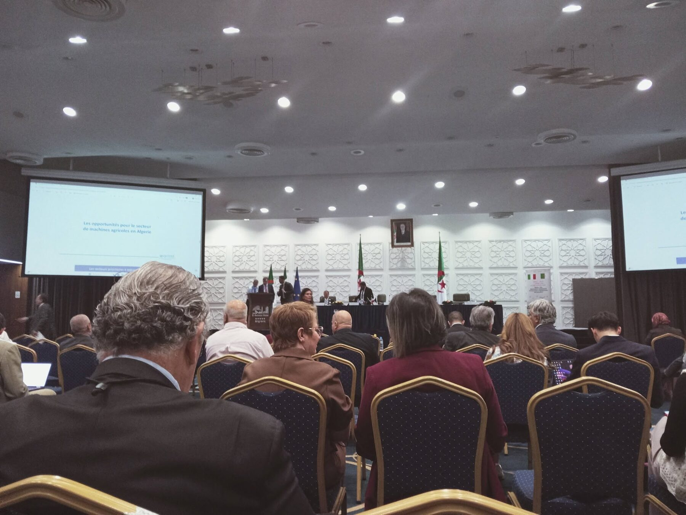
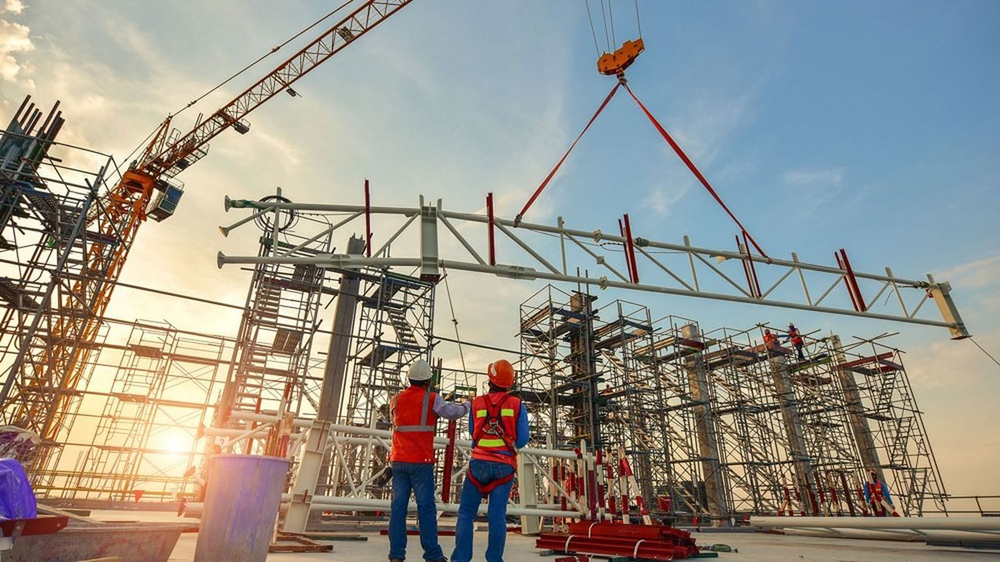

Alger, 28 septembre 2026

L'hôtel El Aurassi à Alger a accueilli une importante rencontre entrepreneuriale réunissant des acteurs économiques italiens et algériens, organisée dans le prolongement du Business Forum Italie–Algérie 2025.
La rencontre a été ouverte par M. Maurizio Motta, représentant de l'ICE — Agence d'Alger, avant le mot de bienvenue de S.E. Mme Alessandra Schiavo, Ambassadrice d'Italie en Algérie.
Les travaux ont porté sur plusieurs axes stratégiques de coopération économique, notamment la mécanisation et la digitalisation de l'agriculture, les opportunités d'exportation, les équipements et technologies agricoles italiennes, ainsi que les perspectives d'investissement et de développement de projets à Timimoun.
Notre cabinet a pris part à cette rencontre économique importante, qui constitue une plateforme privilégiée pour renforcer les relations d'affaires entre les entreprises italiennes et algériennes.
À cette occasion, nous avons eu l'opportunité d'échanger directement avec l'ensemble de la délégation entrepreneuriale italienne, ainsi qu'avec plusieurs entreprises et opérateurs économiques algériens présents à l'événement.
Ces échanges ont permis d'examiner différentes opportunités de partenariat, de coopération commerciale, d'investissement et d'accompagnement de projets en Algérie, notamment dans les secteurs de l'agriculture, des technologies, de l'équipement et du développement territorial.
Notre participation s'inscrit pleinement dans notre démarche visant à mettre en relation les acteurs économiques internationaux avec les opportunités d'affaires en Algérie, à faciliter la compréhension de l'environnement économique local et à accompagner les entreprises dans leurs projets d'implantation, de développement et de partenariat.
Après un déjeuner de travail, les participants ont pris part à une série de rendez-vous B2B, favorisant les échanges directs entre entreprises et permettant d'identifier des complémentarités, des projets potentiels et de nouvelles perspectives de coopération.
La rencontre s'est conclue sur une note particulièrement positive, témoignant de l'intérêt croissant pour le développement de partenariats économiques durables et mutuellement bénéfiques entre l'Italie et l'Algérie.
Pour notre cabinet, cette participation représente une nouvelle occasion de développer son réseau de partenaires internationaux, de renforcer son rôle d'interface entre les opérateurs économiques et de contribuer à la création de passerelles entre expertise internationale et opportunités d'investissement en Algérie.
Une journée riche en échanges, en rencontres et en perspectives de coopération, placée sous le signe du dialogue économique et du rapprochement entre l'Italie et l'Algérie.
Notre rôle est de faciliter la connexion entre les opportunités disponibles en Algérie et les entreprises, investisseurs et partenaires internationaux à la recherche de nouvelles perspectives de développement.
Notre connaissance du terrain et notre réseau professionnel nous permettent de contribuer à la compréhension du marché et à l'identification d'opportunités concrètes.

Analyse du marché et du secteur, identification des opportunités et de l'environnement concurrentiel, étude des conditions d'accès au marché.
Partenaires commerciaux, distributeurs, fournisseurs, fabricants, sous-traitants, investisseurs, partenaires institutionnels ou bureaux d'études.
Identification de prospects, prise de contact avec les acteurs locaux, organisation de rencontres B2B, développement de partenariats commerciaux.
Identification d'opportunités, étude de marché et de faisabilité, recherche de partenaires locaux, ingénierie et structuration du projet.
Identification de fournisseurs et fabricants, recherche de solutions techniques et de partenaires industriels, mise en relation d'entreprises.
Suivi des démarches locales, coordination des partenaires, suivi des opérations sur le terrain, reporting au partenaire international.
Une expérience construite à travers de nombreuses missions réalisées dans plusieurs régions d'Algérie.
Agriculture, investissement, développement rural, environnement, ressources en eau et conseil aux entreprises.
Notre objectif n'est pas seulement de produire une analyse, mais de contribuer à la concrétisation des projets.
Chaque collaboration est définie selon les objectifs, le secteur et les besoins spécifiques du partenaire.
Des collaborations durables fondées sur la confiance, la transparence et la compréhension mutuelle.
Un relais local pour faciliter les échanges et accompagner l'identification d'opportunités.
Que vous souhaitiez développer votre activité, rechercher un partenaire, explorer un marché ou étudier une opportunité d'investissement, nous pouvons constituer votre point de contact local. Construisons ensemble de nouvelles opportunités en Algérie.
Contactez-nous pour discuter de votre projet